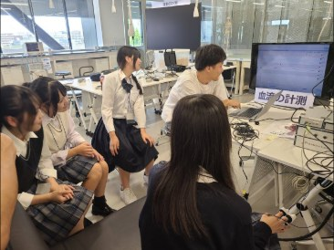
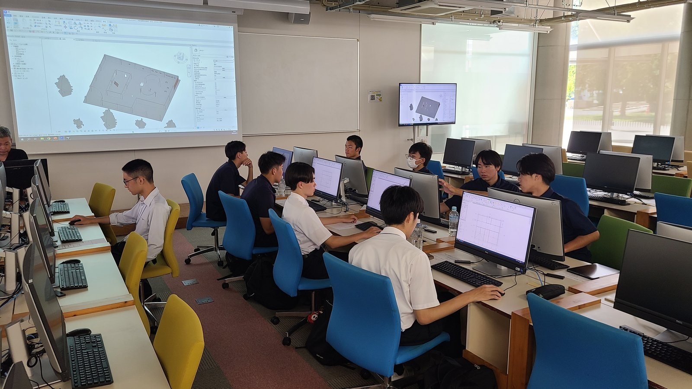
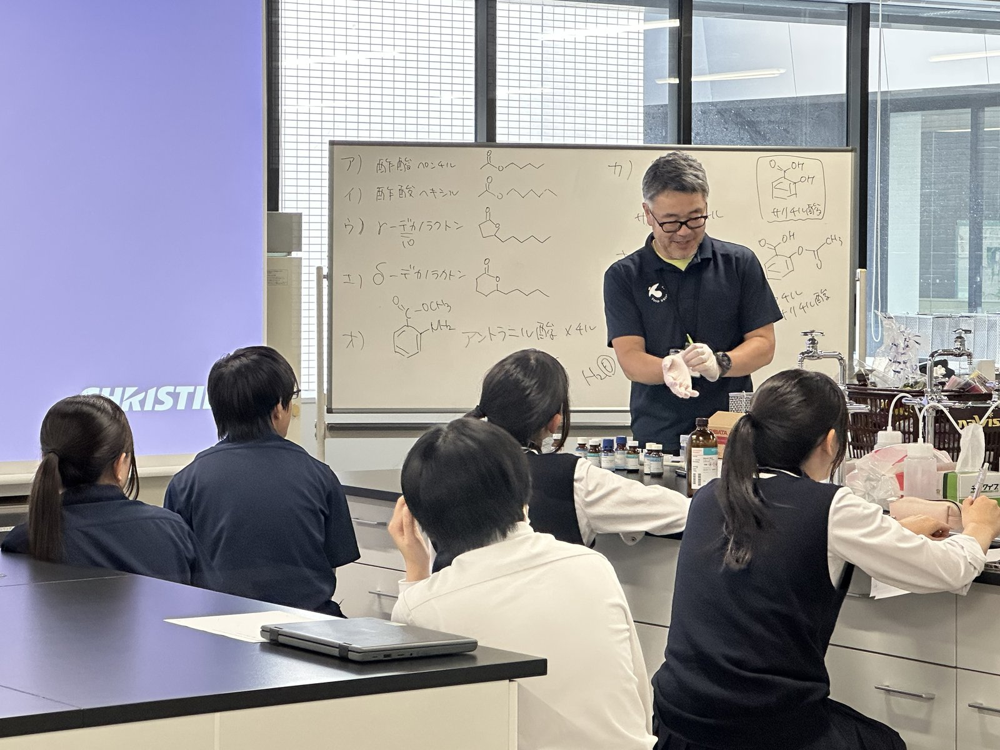
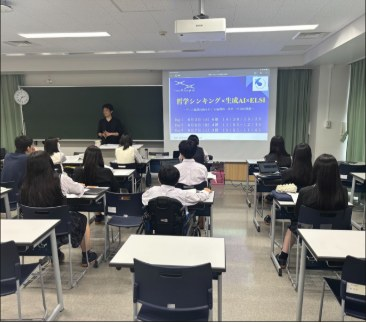
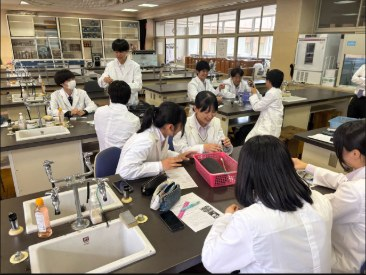
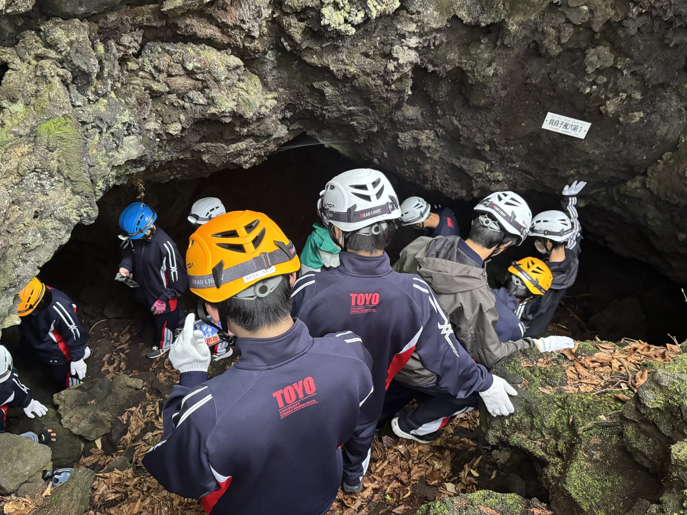
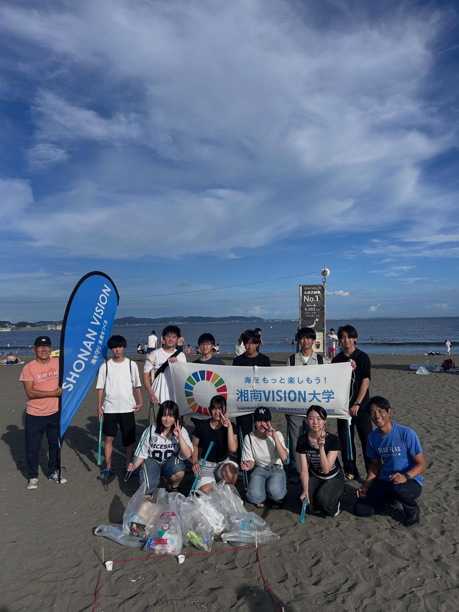
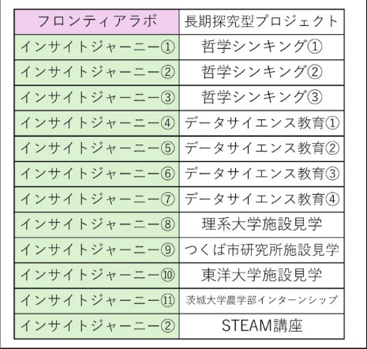

理数フロンティアクラス HR合宿 ― 青木ヶ原樹海フィールドワーク
理数フロンティアクラスは山梨県の許可のもと、経験の豊富なガイドさんとともに富士青木ヶ原樹海の奥地へトレッキングを行いました。ゴール地点は観光目的では入れない洞窟を探検しました。身体ひとつギリギ…
くわしく →02 / 09 — FRONTIER BOOST
SSH 高大・産学連携の取組。大学・企業・研究所とつながり、教室の外で学ぶ。
UNIVERSITY
2023年度より附属3校（牛久、京北、姫路）の2年生を対象とする高大連携事業「Summer Academia」が夏休みの2日間を使って実施されています。本校からは毎年100名以上の生徒が参加し、東洋大学の4つのキャンパス、本部の白山キャンパスでは7学部、赤羽台の情報連携学部、川越は理工学部と、26年度より開設される環境イノベーション学部、朝霞の2学部と合わせて12学部で様々な体験講座が行われています。



PHILOSOPHY

クロスフィロソフィーズ株式会社 の代表取締役社長の吉田幸司 様にお越しいただき、哲学シンキング講演会を行い、なぜ今「問う力」が求められているのかをお話いただきました。今や、AIやインターネットが発達し、分からないことは考えるよりも先に、インターネットやAIに質問をすると答えを教えてもらえて、すぐに答えが手に入る時代。答えに辿り着くまで、まずは「自分で考えてみる」ということをしなくても済むようになってきています。だからこそ、「自分で考えてみる」「正解がないことや正解が1つじゃないことを突きつめて考える」ということがとても大切で、よく考えてみることで今まで思いつかなかったことや見向きもしなかったことに目を向けられるようになったり、「つまらない」と感じていたものをおもしろく感じられたりするようになると教えていただきました。本校の教育理念は、「 諸学の基礎は哲学にあり 」です。生徒の進路は多種多様ですが、どの進路に進んでも、どの学問を学んでも、「自分で考える」「考えてみる」「疑問を持つ」ことが大切になります。
SCIENCE FRONTIER CLASS
長期研究型プロジェクト「フロンティアラボ」と、12回の「インサイトジャーニー」で構成します。




2026
理数フロンティアクラスは山梨県の許可のもと、経験の豊富なガイドさんとともに富士青木ヶ原樹海の奥地へトレッキングを行いました。ゴール地点は観光目的では入れない洞窟を探検しました。身体ひとつギリギ…
くわしく →
BYD井上様をお招きして、理数フロンティアクラスで「遠隔ロボットワークショップ」を実施しました。本校から東京のBYD本社にあるロボット「まるット」くんを動かすという体験です。全員がスマートフォ…
くわしく →2026年7月8日、株式会社インセプタムによる「2026年度 STEAM講座」を開催しました。本講座は農作物の色素を題材に、科学・技術・哲学・ビジネスを融合したプログラムです。講義で光の物理や…
くわしく →

8月18日（火）から19日（水）の2日間にわたり、理数フロンティアクラス1期生を対象としたサマーキャンプを実施しました。今回のテーマは「海や河川などの水圏における水質汚染と環境問題」です。NP…
くわしく →